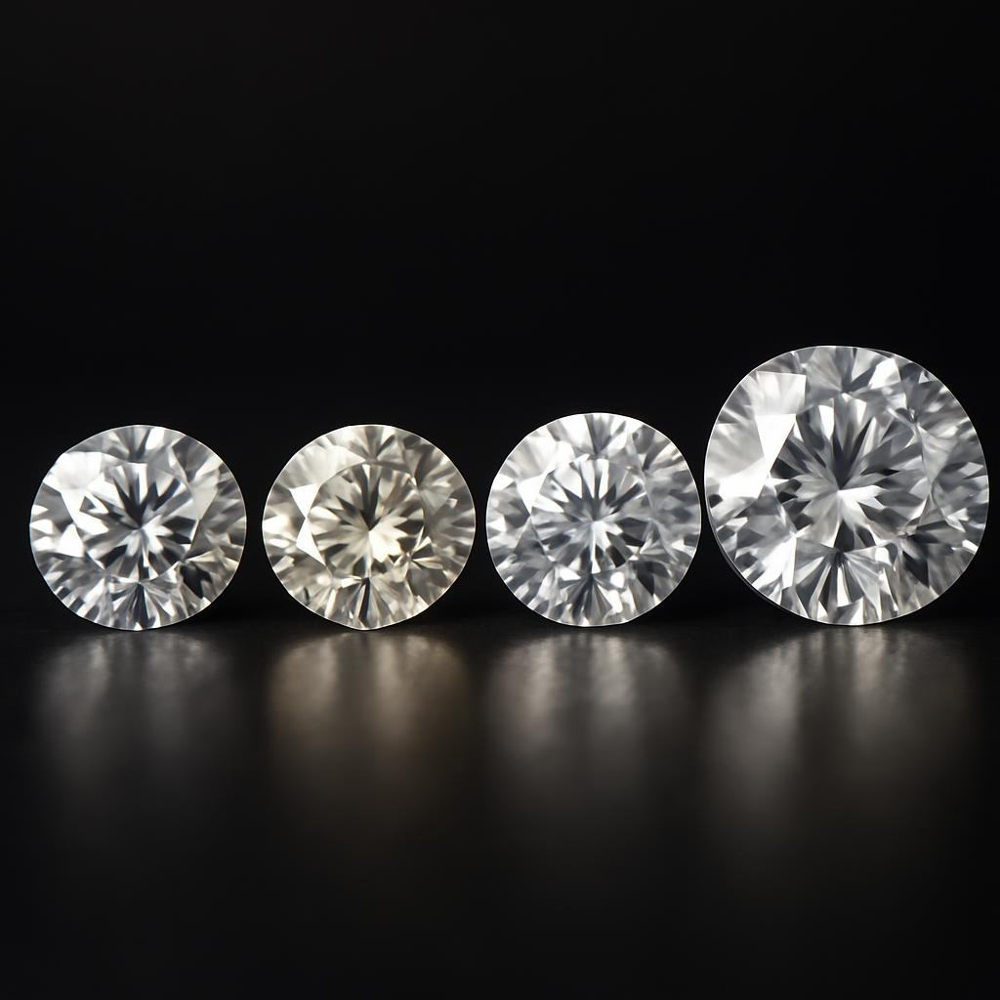

Understanding the 4Cs of Diamonds
The 4Cs of diamonds are a universal method for assessing the quality of any diamond, anywhere in the world. They stand for Cut, Color, Clarity, and Carat Weight. Understanding these four characteristics is crucial for making an informed purchase and appreciating the true value of a diamond.
Cut
The cut of a diamond refers to how well a diamond's facets interact with light. It's the most complex and technically difficult to analyze of the 4Cs. A diamond's cut grade is determined by its brightness (total light reflected), fire (dispersion of light into colors), and scintillation (flashes of light).
Color
Diamond color is graded on a scale from D (colorless) to Z (light yellow or brown). The less color in a diamond, the higher its grade and value. Colorless diamonds allow more light to pass through, resulting in greater sparkle.
Clarity
Clarity refers to the absence of inclusions (internal flaws) and blemishes (external flaws). The GIA Clarity Scale has 11 grades, ranging from Flawless (FL) to Included (I3). Most inclusions are microscopic and do not affect a diamond's beauty.
Carat Weight
Carat is the standard unit of weight for diamonds and other gemstones. One carat equals 200 milligrams. The larger the carat weight, the rarer and more valuable the diamond, assuming all other 3Cs are equal.
Back to Education